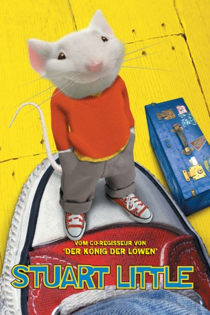

#6301 Stuart Little
Auszeichnungen: für 1 Oscars nominiert
 
 IMDB-Wertung: 5.9 / 10
IMDB-Wertung: 5.9 / 10  Tomatometer: 67
Tomatometer: 67  Metascore: 0
Metascore: 0 
Familie Little bekommt Zuwachs. Eigentlich wollten Mama und Papa ihrem Sohnemann im Waisenhaus ja ein Brüderchen besorgen, aber dann haben sie sich doch für Stuart, eine kleine Maus, entschieden, die schon sehr lange im Waisenhaus ist. Doch der kleine Neuling in der Familie wird nur von den beiden Erwachsenen akzeptiert, Sohn und Katze haben ihre Probleme mit der Gleichstellung eines sprechenden Nagetiers.
Jahr: 1999
Dauer: 84 Minuten
FSK: 0
Land: Deutschland Studio: Columbia TriStar FilmTonspuren: DD5.1 - ,
Untertitel: Deutsch,
Auflösung: 1080p (1920x1040) Größe: 6318 MB
Genre: Komödie, Abenteuer, Fantasy, Familie
Regisseur: Rob Minkoff
Drehbuch: Gô Nagai
Soundtrack:
Darsteller:
Datei: X:\3-Trilogie(N-Z)\Stuart Little\Stuart Little (1999, FSK0, 1920x1040).mkv seit 06.06.2017
Festplatte: HD Collection-3(N-Z)-6(A-Z)
 Alle Filme aus Gruppe '3-Trilogie(N-Z)\Stuart Little'
Alle Filme aus Gruppe '3-Trilogie(N-Z)\Stuart Little'